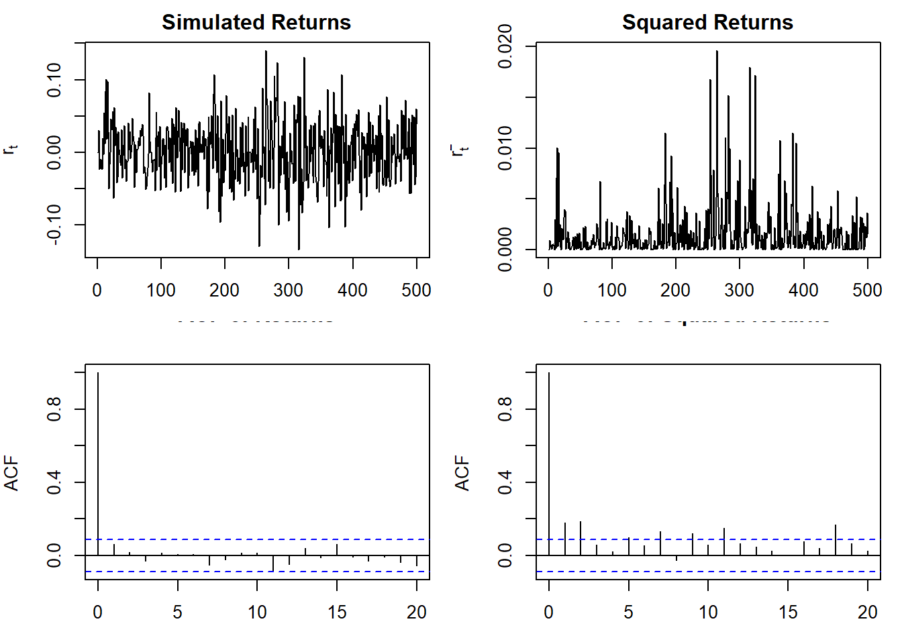
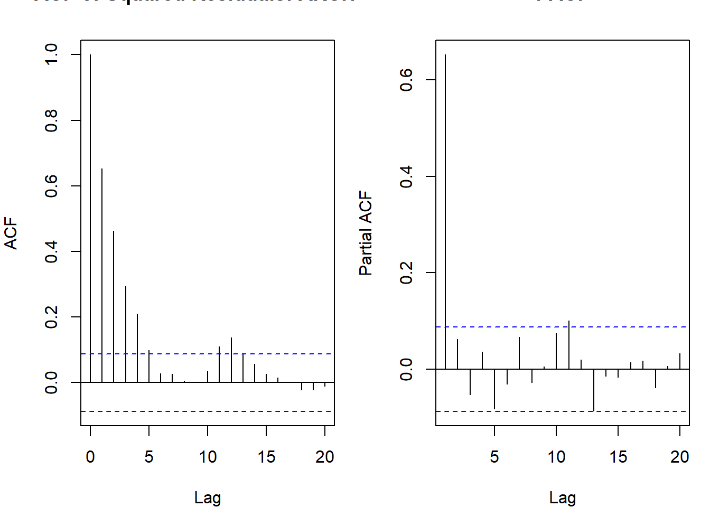
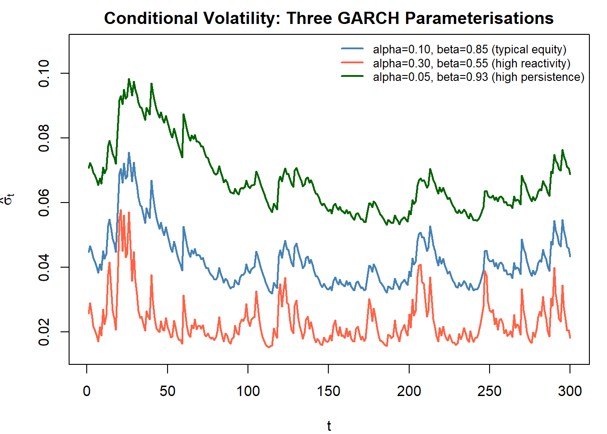
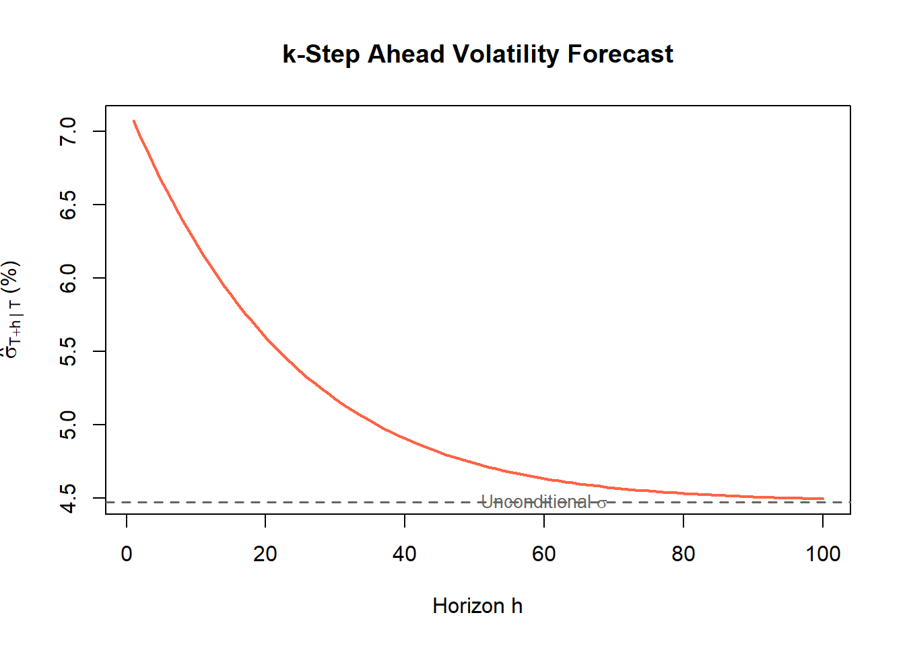
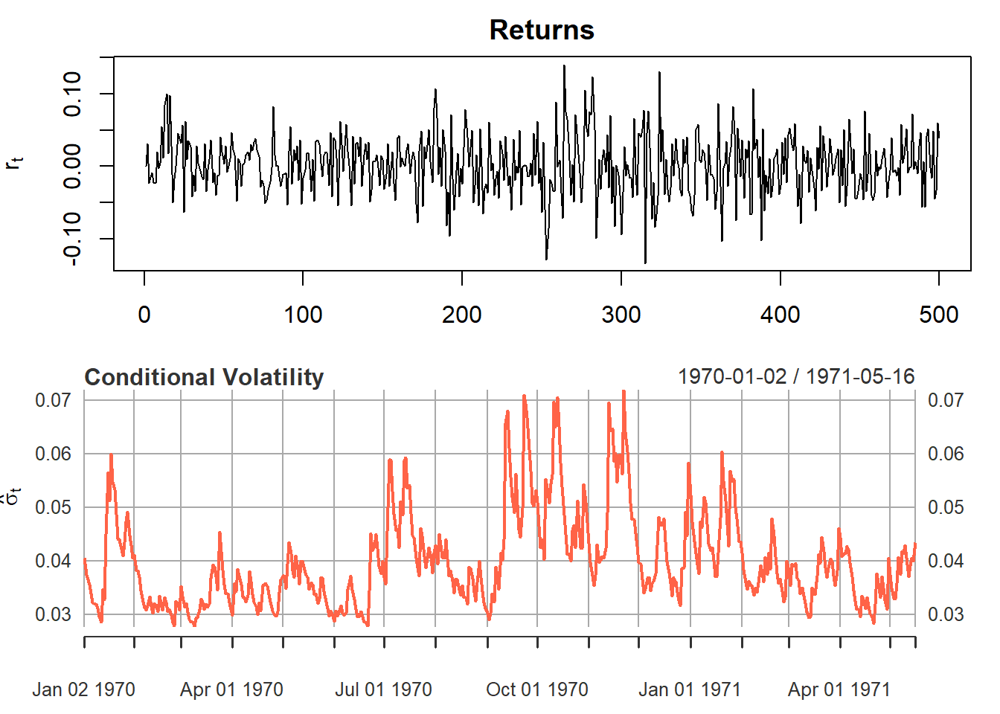
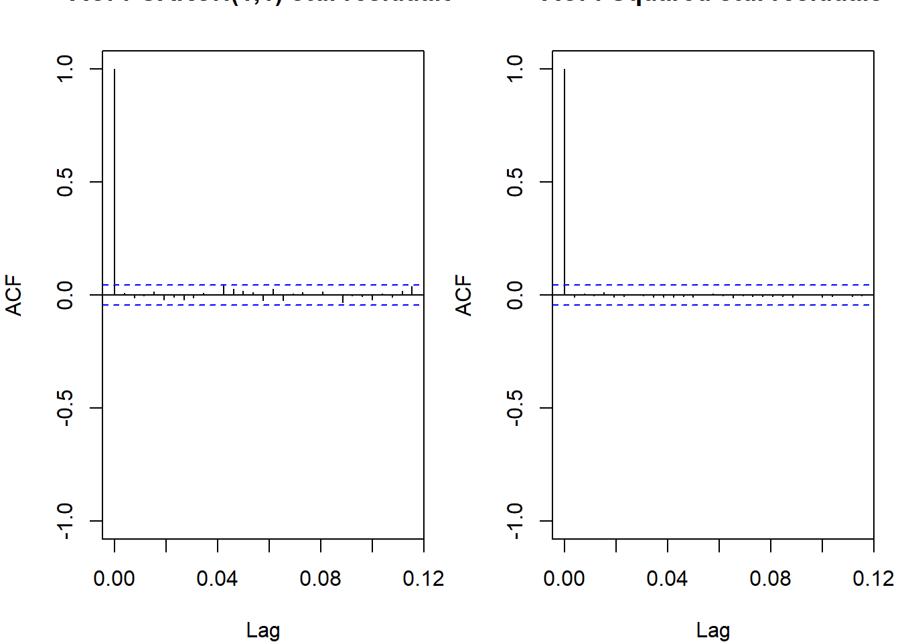
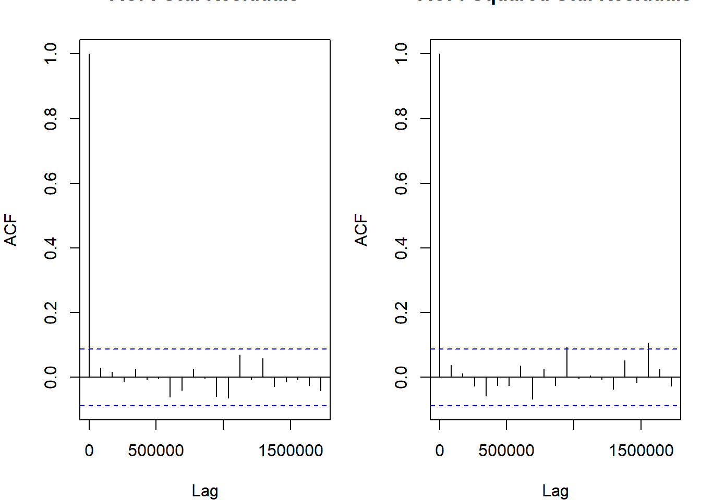

Conditional Heteroskedasticity
Volatility, ARCH, and GARCH models
Volatility
Standard ARMA models handle the mean of a time series. In financial data, the variance is also time-varying, a property called volatility or conditional heteroskedasticity.
A critical point: financial returns are not iid. They come from a heteroskedastic distribution whose variance changes over time. The residuals from a mean model are not iid either; they are conditionally heteroskedastic. Treating them as iid ignores structure that is both real and forecastable.
Three key features of financial returns:
- Volatility clustering: large moves (positive or negative) tend to be followed by large moves; calm periods cluster together
- Heavy tails: returns have more probability in the tails than a normal distribution (excess kurtosis)
- Near-zero autocorrelation in returns, but significant autocorrelation in squared returns
The third feature is the key diagnostic: \(\text{Corr}(Z_t, Z_{t-k}) \approx 0\) but \(\text{Corr}(Z_t^2, Z_{t-k}^2) \neq 0\). The sign of tomorrow’s return is unpredictable; its magnitude is not. To verify this formally, use FinTS::ArchTest(r, lags = m) which tests \(H_0\): no ARCH effects up to order \(m\) using the LM statistic \(T \cdot R^2 \sim \chi^2(m)\).
Returns have almost no autocorrelation, but squared returns are strongly autocorrelated. The variance is predictable even if the sign is not.
Model for the Variance
The general structure of conditional heteroskedasticity models:
\[Z_t = \sigma_t \epsilon_t, \quad \epsilon_t \overset{iid}{\sim} WN(0,1)\]
where \(\sigma_t\) is the conditional standard deviation (time-varying and \(\mathcal{F}_{t-1}\)-measurable), and \(\epsilon_t\) is independent of \(\sigma_t\). \(Z_t\) are typically the residuals from a model for the conditional mean, or the demeaned returns themselves.
Moment Properties (via Tower Law)
First moment: using the law of iterated expectations (\(\mathbb{E}[X] = \mathbb{E}[\mathbb{E}[X \mid \mathcal{F}_{t-1}]]\)):
\[\mathbb{E}[Z_t] = \mathbb{E}[\mathbb{E}[Z_t \mid \mathcal{F}_{t-1}]] = \mathbb{E}[\sigma_t \,\mathbb{E}[\epsilon_t \mid \mathcal{F}_{t-1}]] = \mathbb{E}[\sigma_t \cdot 0] = 0\]
Second moment (unconditional variance):
\[\mathbb{E}[Z_t^2] = \mathbb{E}[\mathbb{E}[Z_t^2 \mid \mathcal{F}_{t-1}]] = \mathbb{E}[\sigma_t^2 \,\mathbb{E}[\epsilon_t^2 \mid \mathcal{F}_{t-1}]] = \mathbb{E}[\sigma_t^2 \cdot 1] = \mathbb{E}[\sigma_t^2]\]
The unconditional variance equals the unconditional expectation of the conditional variance.
Autocovariance (\(k > 0\)): using the tower law and the fact that \(Z_{t-k}\) is \(\mathcal{F}_{t-1}\)-measurable when \(k \geq 1\):
\[\mathbb{E}[Z_t Z_{t-k}] = \mathbb{E}[\mathbb{E}[Z_t Z_{t-k} \mid \mathcal{F}_{t-1}]] = \mathbb{E}[Z_{t-k}\, \mathbb{E}[Z_t \mid \mathcal{F}_{t-1}]] = \mathbb{E}[Z_{t-k} \cdot 0] = 0\]
So \(Z_t\) is uncorrelated at all lags, even though it is not iid.
Conditional variance (time-varying):
\[\mathbb{V}(Z_t \mid \mathcal{F}_{t-1}) = \sigma_t^2 \,\mathbb{E}[\epsilon_t^2] = \sigma_t^2\]
Autocorrelation in squares is non-zero:
\[\mathbb{E}[Z_t^2 Z_{t-k}^2] = \mathbb{E}[\sigma_t^2 \sigma_{t-k}^2] + \text{cross terms} \neq (\mathbb{E}[Z_t^2])^2 \quad \text{in general}\]
This is why the ACF of \(Z_t\) is flat but the ACF of \(Z_t^2\) is not.
ARCH(\(r\))
Autoregressive Conditional Heteroskedasticity of order \(r\) (Engle, 1982):
\[\sigma_t^2 = \alpha_0 + \alpha_1 Z_{t-1}^2 + \cdots + \alpha_r Z_{t-r}^2\]
with \(\alpha_0 > 0\), \(\alpha_i \geq 0\) (to keep \(\sigma_t^2 > 0\)), and \(\sum_{i=1}^r \alpha_i < 1\) for covariance stationarity. In practice, ARCH models are fit via fGarch::garchFit(~garch(r, 0), data) for pure ARCH(r) or rugarch::ugarchfit() for the full GARCH framework. The PACF of \(Z_t^2\) is used to identify the lag order \(r\).
Unconditional Variance (ARCH(1))
For ARCH(1) with \(\sigma_t^2 = \alpha_0 + \alpha_1 Z_{t-1}^2\), take unconditional expectations of both sides:
\[\mathbb{E}[\sigma_t^2] = \alpha_0 + \alpha_1\,\mathbb{E}[Z_{t-1}^2]\]
By stationarity, \(\mathbb{E}[\sigma_t^2] = \mathbb{E}[\sigma_{t-1}^2] = \sigma^2\). Also \(\mathbb{E}[Z_{t-1}^2] = \sigma^2\) from the second-moment result above:
\[\sigma^2 = \alpha_0 + \alpha_1 \sigma^2 \implies \sigma^2 = \frac{\alpha_0}{1 - \alpha_1}\]
For general ARCH(\(r\)):
\[\sigma^2 = \frac{\alpha_0}{1 - \alpha_1 - \cdots - \alpha_r}\]
ARCH(1) Properties
For ARCH(1) with \(\sigma_t^2 = \alpha_0 + \alpha_1 Z_{t-1}^2\) and \(\epsilon_t \overset{iid}{\sim} N(0,1)\):
Conditional mean and variance:
\[\mathbb{E}[Z_t \mid \mathcal{F}_{t-1}] = 0, \qquad \mathbb{V}(Z_t \mid \mathcal{F}_{t-1}) = \sigma_t^2 = \alpha_0 + \alpha_1 Z_{t-1}^2\]
Unconditional mean: \(\mathbb{E}[Z_t] = 0\) (from tower law, as shown above).
Stationarity condition: \(\alpha_1 < 1\). The unconditional variance is \(\sigma^2 = \alpha_0 / (1 - \alpha_1)\).
ACF of levels: \(\text{Corr}(Z_t, Z_{t-k}) = 0\) for all \(k \geq 1\) (from tower law). \(Z_t\) is a martingale difference sequence.
ACF of squares: \(Z_t^2\) follows an AR(1):
\[Z_t^2 = \alpha_0 + \alpha_1 Z_{t-1}^2 + v_t, \quad v_t = \sigma_t^2(\epsilon_t^2 - 1)\]
where \(v_t\) is a martingale difference with \(\mathbb{E}[v_t \mid \mathcal{F}_{t-1}] = 0\). So the ACF of \(Z_t^2\) decays geometrically at rate \(\alpha_1\), just like an AR(1).
Kurtosis: With normal \(\epsilon_t\), the marginal distribution of \(Z_t\) is not normal. Using the law of total variance and the fact that \(\epsilon_t^4\) has expectation 3 under normality:
\[K(Z_t) = \frac{\mathbb{E}[Z_t^4]}{(\mathbb{E}[Z_t^2])^2} = 3 \cdot \frac{1 - \alpha_1^2}{1 - 3\alpha_1^2} > 3 \quad \text{(requires } 3\alpha_1^2 < 1\text{)}\]
The denominator is smaller than the numerator, so \(K > 3\): ARCH generates fat tails even with Gaussian innovations. Larger \(\alpha_1\) means heavier tails. This matches the excess kurtosis observed in return data.
Existence of kurtosis requires \(3\alpha_1^2 < 1\), i.e. \(\alpha_1 < 1/\sqrt{3} \approx 0.577\). Beyond this, the fourth moment does not exist.
The ACF of \(Z_t^2\) follows an AR(\(r\)) pattern. Use the PACF of \(Z_t^2\) to identify the ARCH order.

GARCH(1,1)
ARCH(\(r\)) needs a large \(r\) to capture persistent volatility, which means many parameters. Generalized ARCH (Bollerslev, 1986) adds a lagged variance term for parsimony. The GARCH(1,1) variance equation:
\[\sigma_t^2 = \omega + \alpha Z_{t-1}^2 + \beta \sigma_{t-1}^2\]
with \(\omega > 0\), \(\alpha, \beta \geq 0\), and \(\alpha + \beta < 1\) for covariance stationarity.
Interpretation: - \(\omega\): baseline (long-run) variance contribution - \(\alpha\): reaction to shocks; how much yesterday’s squared innovation raises today’s variance - \(\beta\): persistence; how much yesterday’s conditional variance carries over
Unconditional variance: take expectations of the variance equation using the same stationarity argument as ARCH:
\[\sigma^2 = \omega + \alpha \sigma^2 + \beta \sigma^2 \implies \sigma^2 = \frac{\omega}{1 - \alpha - \beta}\]
Persistence: \(\alpha + \beta\). Typical estimates for equity returns: \(\alpha \approx 0.10\), \(\beta \approx 0.85\), so persistence \(\approx 0.95\). Volatility shocks are highly persistent but eventually die out.
Parameter Scenarios
The roles of \(\alpha\) and \(\beta\) are distinct: \(\alpha\) controls how sharply the variance spikes in response to a new shock; \(\beta\) controls how slowly it decays afterward. Different combinations produce very different volatility dynamics:
| Scenario | \(\alpha\) | \(\beta\) | \(\alpha+\beta\) | Behavior |
|---|---|---|---|---|
| Typical equity | 0.10 | 0.85 | 0.95 | Moderate spike, slow mean reversion. Shocks persist for weeks |
| High reactivity, low persistence | 0.30 | 0.55 | 0.85 | Variance jumps sharply after a shock but reverts quickly. Short-lived volatility clusters |
| Low reactivity, high persistence | 0.05 | 0.93 | 0.98 | Small spikes but extremely slow reversion. Variance stays elevated for months after a shock |
| Near-IGARCH | 0.10 | 0.89 | 0.99 | Virtually no mean reversion in finite samples; variance forecast barely declines with horizon |
| IGARCH | 0.10 | 0.90 | 1.00 | Unconditional variance infinite; shocks are permanent |
| ARCH-only (\(\beta = 0\)) | 0.40 | 0.00 | 0.40 | No variance smoothing; conditional variance jumps and collapses each period. Needs high \(r\) to capture real persistence |
| Nearly constant variance | 0.02 | 0.05 | 0.07 | Very little conditional heteroskedasticity; close to homoskedastic |

k-Step Ahead Variance Forecast
The one-step-ahead forecast at time \(T\):
\[\sigma_{T+1|T}^2 = \omega + \alpha Z_T^2 + \beta \sigma_T^2\]
For \(h \geq 2\), take conditional expectations of the variance equation at horizon \(h\):
\[\sigma_{T+h|T}^2 = \mathbb{E}[\sigma_{T+h}^2 \mid \mathcal{F}_T] = \omega + (\alpha + \beta)\,\sigma_{T+h-1|T}^2\]
(using \(\mathbb{E}[Z_{T+h-1}^2 \mid \mathcal{F}_T] = \sigma_{T+h-1|T}^2\)). This is a first-order linear recursion in \(\sigma_{T+h|T}^2\). Solving with initial condition \(\sigma_{T+1|T}^2\):
\[\sigma_{T+h|T}^2 = \sigma^2 + (\alpha + \beta)^{h-1}\left(\sigma_{T+1|T}^2 - \sigma^2\right)\]
The forecast reverts to the unconditional variance \(\sigma^2\) at geometric rate \((\alpha + \beta)^{h-1}\). When \(\alpha + \beta\) is close to 1, variance forecasts remain above \(\sigma^2\) for many periods after a shock.

IGARCH: Integrated GARCH
When \(\alpha + \beta = 1\) exactly, the process is Integrated GARCH (IGARCH). The variance equation becomes:
\[\sigma_t^2 = \omega + \alpha Z_{t-1}^2 + (1-\alpha)\,\sigma_{t-1}^2\]
In this case, the unconditional variance is infinite and variance forecasts do not revert to a finite long-run level: shocks to volatility are permanent. IGARCH is analogous to a unit-root process in the variance. It arises empirically when \(\hat{\alpha} + \hat{\beta}\) is very close to 1, which is common in daily financial data.
GARCH-M: GARCH in Mean
GARCH-M (Engle, Lilien, Robins, 1987) includes the conditional variance (or standard deviation) in the mean equation:
\[Z_t = \mu + \delta\,\sigma_t + \sigma_t\,\epsilon_t \quad \text{or} \quad Z_t = \mu + \delta\,\sigma_t^2 + \sigma_t\,\epsilon_t\]
\(\delta > 0\) gives a time-varying risk premium: investors demand higher expected returns when volatility is high. This links the return distribution directly to the risk-return tradeoff.
Estimation by MLE
Given a sample \(Z_1, \ldots, Z_T\) and parameter vector \(\boldsymbol{\theta} = (\omega, \alpha, \beta)'\), the conditional log-likelihood under Gaussian innovations is:
\[\ell(\boldsymbol{\theta}) = \sum_{t=1}^T \ell_t(\boldsymbol{\theta}), \quad \ell_t = -\frac{1}{2}\log(2\pi) - \frac{1}{2}\log\sigma_t^2 - \frac{Z_t^2}{2\sigma_t^2}\]
The \(\sigma_t^2\) sequence is generated recursively from the GARCH equation, initialised at \(\sigma_1^2 = \hat{\sigma}^2\) (sample variance). Maximise \(\ell(\boldsymbol{\theta})\) numerically (BFGS or similar).
For fat-tailed returns, replace the Gaussian contribution with a Student-t log-likelihood:
\[\ell_t = \log\Gamma\!\left(\frac{\nu+1}{2}\right) - \log\Gamma\!\left(\frac{\nu}{2}\right) - \frac{1}{2}\log(\pi(\nu-2)) - \frac{1}{2}\log\sigma_t^2 - \frac{\nu+1}{2}\log\!\left(1 + \frac{Z_t^2}{\sigma_t^2(\nu-2)}\right)\]
where \(\nu\) is the degrees-of-freedom parameter (estimated alongside \(\boldsymbol{\theta}\)). Student-t GARCH almost always fits better than normal GARCH for equity and FX returns. In R, rugarch::ugarchspec() defines the model structure and rugarch::ugarchfit(spec, data) estimates by MLE. For Student-t innovations, set distribution.model = 'std' in ugarchspec(); the degrees-of-freedom \(\nu\) is estimated jointly with \((\omega, \alpha, \beta)\).
library(rugarch)
spec_norm <- ugarchspec(
variance.model = list(model = "sGARCH", garchOrder = c(1, 1)),
mean.model = list(armaOrder = c(0, 0), include.mean = TRUE),
distribution.model = "norm"
)
spec_t <- ugarchspec(
variance.model = list(model = "sGARCH", garchOrder = c(1, 1)),
mean.model = list(armaOrder = c(0, 0), include.mean = TRUE),
distribution.model = "std" # Student-t
)
fit <- ugarchfit(spec_norm, data = r)
fit_t <- ugarchfit(spec_t, data = r)
cat("Normal GARCH AIC:", round(infocriteria(fit)[1], 4), "\n")Normal GARCH AIC: -3.6299 cat("Student GARCH AIC:", round(infocriteria(fit_t)[1], 4), "\n")Student GARCH AIC: -3.6249 
Real-Data Example: NASDAQ Returns
The NASDAQ example demonstrates the full GARCH workflow on daily equity returns. The pattern applies to any financial return series.
Step 1: Download and transform. quantmod::getSymbols("^IXIC") fetches NASDAQ data; log-returns are computed with diff(log(adjusted)). The mean is subtracted to produce centered returns for volatility modeling:
# replicate NASDAQ workflow using EuStockMarkets (no internet required)
data("EuStockMarkets")
price <- EuStockMarkets[, "DAX"]
ret_raw <- diff(log(price))
ret <- ret_raw - mean(ret_raw) # center returns (remove mean)Step 2: Descriptive statistics. Before fitting, check whether ARCH effects are present using FinTS::ArchTest() and examine the return distribution:
cat("Mean:", round(mean(ret), 6),
" SD:", round(sd(ret), 6),
" Skew:", round(mean(((ret - mean(ret))/sd(ret))^3), 4),
" Kurt:", round(mean(((ret - mean(ret))/sd(ret))^4), 4), "\n")Mean: 0 SD: 0.010301 Skew: -0.5536 Kurt: 9.2697 ArchTest(ret, lags = 10)
ARCH LM-test; Null hypothesis: no ARCH effects
data: ret
Chi-squared = 75.354, df = 10, p-value = 4.06e-12Excess kurtosis > 3 and a significant ARCH-LM test confirm that GARCH modeling is warranted.
Step 3: Fit ARCH(1), ARCH(6), GARCH(1,1). The fGarch::garchFit(~garch(p, q), data) interface fits ARCH(\(p\)) (set \(q=0\)) and GARCH(\(p\),\(q\)). Standardized residuals \(\hat{\epsilon}_t = \hat{Z}_t / \hat{\sigma}_t\) are stored in the @sigma.t slot:
m_arch1 <- fGarch::garchFit(~garch(1, 0), ret, trace = FALSE)
m_arch6 <- fGarch::garchFit(~garch(6, 0), ret, trace = FALSE)
m_garch11 <- fGarch::garchFit(~garch(1, 1), ret, trace = FALSE)cat("ARCH(1) AIC:", round(m_arch1@fit$ics["AIC"], 4),
" BIC:", round(m_arch1@fit$ics["BIC"], 4), "\n")ARCH(1) AIC: -6.3277 BIC: -6.3188 cat("ARCH(6) AIC:", round(m_arch6@fit$ics["AIC"], 4),
" BIC:", round(m_arch6@fit$ics["BIC"], 4), "\n")ARCH(6) AIC: -6.4258 BIC: -6.4021 cat("GARCH(1,1) AIC:", round(m_garch11@fit$ics["AIC"], 4),
" BIC:", round(m_garch11@fit$ics["BIC"], 4), "\n")GARCH(1,1) AIC: -6.4144 BIC: -6.4025 Step 4: Standardized residual diagnostics. After fitting, extract \(\hat{\epsilon}_t = \hat{Z}_t / \hat{\sigma}_t\) and check for remaining ARCH effects:

If ACF of squared standardized residuals is flat, the GARCH model has captured the variance dynamics. GARCH(1,1) is almost always preferred over ARCH(\(r\)) for \(r > 2\) because it captures the same persistence with far fewer parameters.
Key Parameters to Check After Fitting
After estimating GARCH(1,1), inspect:
- \(\hat{\alpha}\) significant? If not, no ARCH effect; a constant-variance model may suffice
- \(\hat{\beta}\) significant? If yes, a single lagged squared return (ARCH(1)) is not enough; the variance is persistent and GARCH is needed
- Stationarity: \(\hat{\alpha} + \hat{\beta} < 1\)? If this is borderline, consider IGARCH or check for structural breaks in volatility
- Multiple lags? Run the ARCH-LM test on standardized residuals to confirm all variance dynamics are captured
Diagnosing Volatility
flowchart TD
A([Fit AR p]) --> B
subgraph B["Mean equation adequate?"]
B1[Residuals plot]
B2[et^2 plot]
B3[ACF of et]
B4[Box-Ljung on et]
end
B --> C
subgraph C["ARCH effects present?"]
C1[ACF of et^2]
C2[ARCH-LM]
C3[Box-Ljung on et^2]
end
C --> D
subgraph D["Normality of residuals?"]
D1[Jarque-Bera]
D2[Shapiro-Wilk]
D3[QQ plot of et]
end
D --> E([Fit GARCH 1,1])
E --> F
subgraph F["Variance dynamics fully captured?"]
F1[ACF of Zt² standardised]
F2[ARCH-LM on Zt standardised]
F3[Box-Ljung on Zt² standardised]
end
F --> G
subgraph G["Normality resolved by GARCH?"]
G1[Jarque-Bera]
G2[Shapiro-Wilk]
G3[QQ plot of Zt standardised]
end
Before fitting, check whether volatility modeling is warranted:
- Volatility clustering: time plot of residuals from the mean model
- Heavy tails: QQ-plot and excess kurtosis of residuals
- ACF of squared residuals: significant bars signal remaining ARCH effects
ARCH-LM Test
Null: \(H_0: \alpha_1 = \alpha_2 = \cdots = \alpha_m = 0\) (no ARCH effects of order \(m\)).
Procedure: regress \(\hat{Z}_t^2\) on \(m\) of its own lags:
\[\hat{Z}_t^2 = a_0 + a_1 \hat{Z}_{t-1}^2 + \cdots + a_m \hat{Z}_{t-m}^2 + u_t\]
Test statistic: under \(H_0\), the LM statistic
\[LM = T \cdot R^2 \overset{H_0}{\sim} \chi^2(m)\]
where \(R^2\) is from the auxiliary regression and \(T\) is the sample size. An equivalent \(F\)-test works for finite samples. Reject \(H_0\) (and proceed to fit GARCH) when \(LM > \chi^2_m(\alpha)\). FinTS::ArchTest(r, lags = m) runs this automatically. The inputs are the return series (or residuals from a mean model) and the number of lags m to test.
library(FinTS)
ArchTest(r, lags = 5)
ARCH LM-test; Null hypothesis: no ARCH effects
data: r
Chi-squared = 32.213, df = 5, p-value = 5.392e-06The test output gives the LM statistic and \(p\)-value. If \(p < 0.05\), ARCH effects are present and GARCH is warranted.
Standardized Residual Diagnostics
After fitting GARCH, define standardized residuals:
\[\hat{\epsilon}_t = \frac{\hat{Z}_t}{\hat{\sigma}_t}\]
Under correct specification, \(\hat{\epsilon}_t\) should be approximately iid. Check:
- ACF of \(\hat{\epsilon}_t\): no remaining mean dynamics (all bars within \(\pm 1.96/\sqrt{T}\))
- ACF of \(\hat{\epsilon}_t^2\): no remaining variance dynamics (same criterion)
- ARCH-LM on \(\hat{\epsilon}_t\): \(p\)-value should not reject \(H_0\)
- QQ-plot of \(\hat{\epsilon}_t\): assess whether the assumed innovation distribution (normal or \(t\)) fits the tails

Appendix: Key Functions
ugarchspec() + ugarchfit(): rugarch workflow
rugarch::ugarchspec() defines the model; rugarch::ugarchfit(spec, data) estimates it.
data("EuStockMarkets")
ret <- diff(log(EuStockMarkets[, "DAX"]))
spec <- ugarchspec(
variance.model = list(model = "sGARCH", garchOrder = c(1, 1)),
mean.model = list(armaOrder = c(0, 0), include.mean = TRUE),
distribution.model = "std" # Student-t innovations
)
fit <- ugarchfit(spec, data = ret)
cat("omega:", round(coef(fit)["omega"], 6),
" alpha:", round(coef(fit)["alpha1"], 4),
" beta:", round(coef(fit)["beta1"], 4),
" nu:", round(coef(fit)["shape"], 2), "\n")omega: 2e-06 alpha: 0.0803 beta: 0.9014 nu: 6.08 cat("Persistence (alpha+beta):", round(coef(fit)["alpha1"] + coef(fit)["beta1"], 4), "\n")Persistence (alpha+beta): 0.9817 garchFit(): fGarch workflow
fGarch::garchFit(~garch(p, q), data) is a simpler interface. Standardized residuals are in fit@sigma.t.
cat("Coefficients:\n"); print(round(fit2@fit$coef, 6))Coefficients: mu omega alpha1 beta1
0.000654 0.000005 0.068417 0.887610 ArchTest(): ARCH-LM Test
FinTS::ArchTest(x, lags) tests \(H_0\): no ARCH effects at any lag up to lags. Statistic is \(T \cdot R^2 \sim \chi^2(\text{lags})\).
ArchTest(ret, lags = 5)
ARCH LM-test; Null hypothesis: no ARCH effects
data: ret
Chi-squared = 71.694, df = 5, p-value = 4.549e-14ArchTest(ret, lags = 10)
ARCH LM-test; Null hypothesis: no ARCH effects
data: ret
Chi-squared = 77.159, df = 10, p-value = 1.805e-12sigma() and residuals(): Extracting Results from ugarchfit
sig_hat <- sigma(fit) # conditional standard deviations
std_res <- residuals(fit, standardize = TRUE) # standardized residuals
cat("Mean |std resid|:", round(mean(abs(std_res)), 4), "\n")Mean |std resid|: 0.7469 cat("Kurtosis std resid:", round(mean(std_res^4), 4), " (expect ~3 if normal)\n")Kurtosis std resid: 23.5388 (expect ~3 if normal)